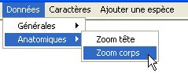
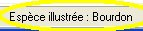
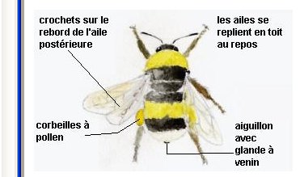
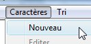
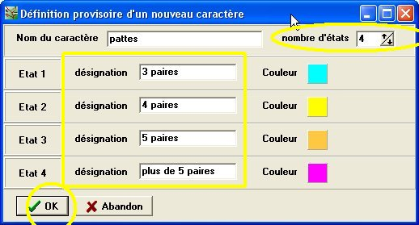
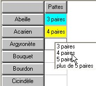
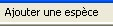

Organiser des données
Organiser des données
Organisation des observations :
définition de caractère et de leurs états
- Affichage des documents
correspondant aux données :
- Choisir la donnée à afficher
(menu Données)
- Cliquer sur le nom d'un taxon dans le
tableau : le document correspondant s'affiche dans la
fenêtre Observer et le nom du
taxon apparaît en bas de la fenêtre.

Si la fenêtre Observer est totalement
recouverte, par la fenêtre Organiser,
le document ne sera pas visible. Ajuster la taille de la fenêtre
en conséquence.
- Définition de caractères
et de leurs états
A partir des données de Phylogène (ou
d'autres documents comme des moulages de pattes ou de dents...), on
peut définir quelques caractères et leurs états.
Ce sera l'occasion d'expliquer le vocabulaire.
- Choisir le menu Caractères/Nouveau

- Remplir la fiche de définition du
caractère

- Nom du caractère
- nombre d'états
- désignation des états
- couleur affectée à chaque état (pour
en changer, cliquer sur le carré coloré)
- cliquer sur OK.
- Remplissage du tableau avec les états
définis 
- Il est possible d'ajouter
librement des espèces avec le menu : 